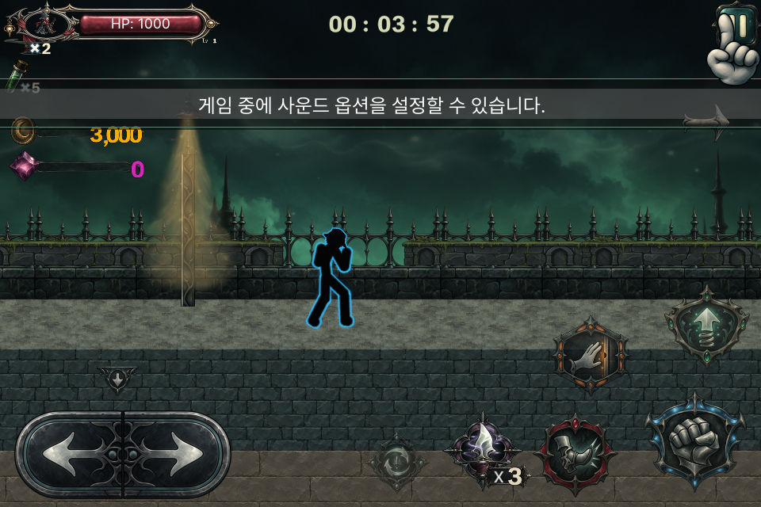
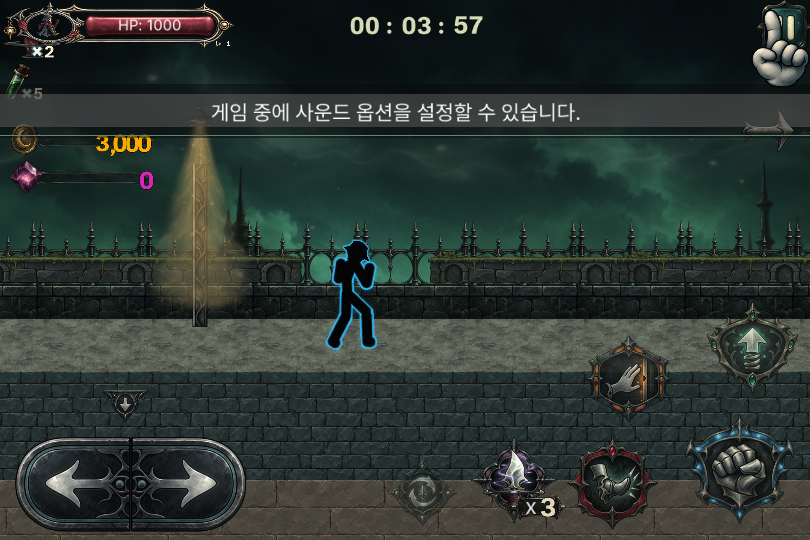
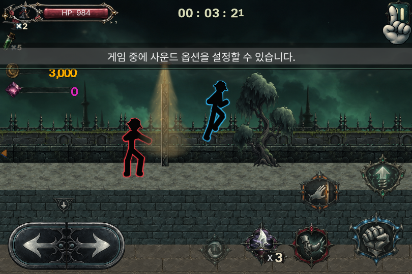
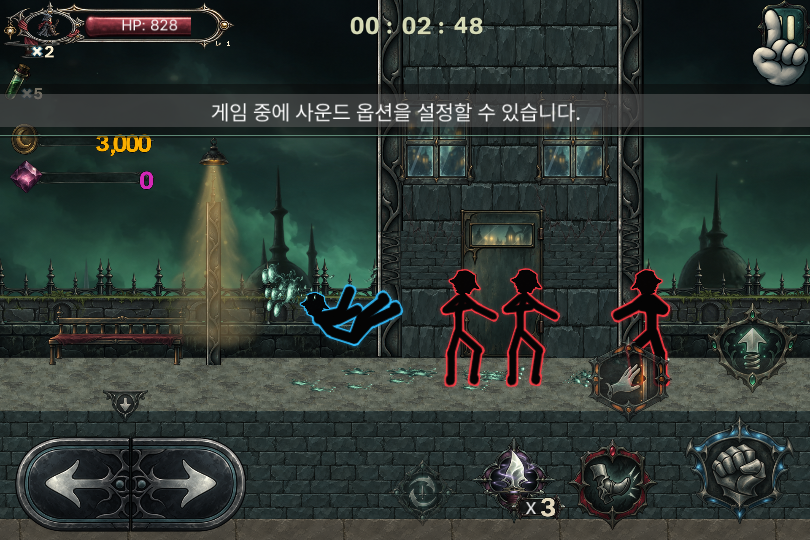
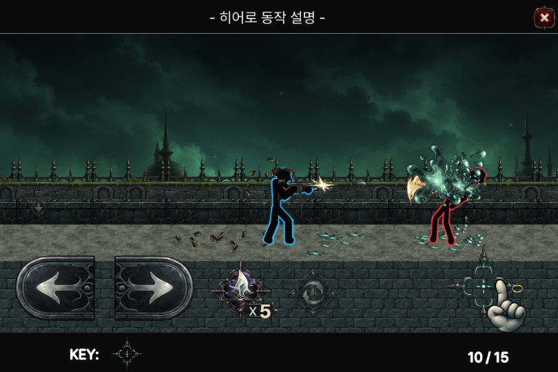
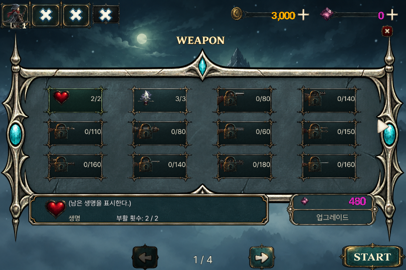
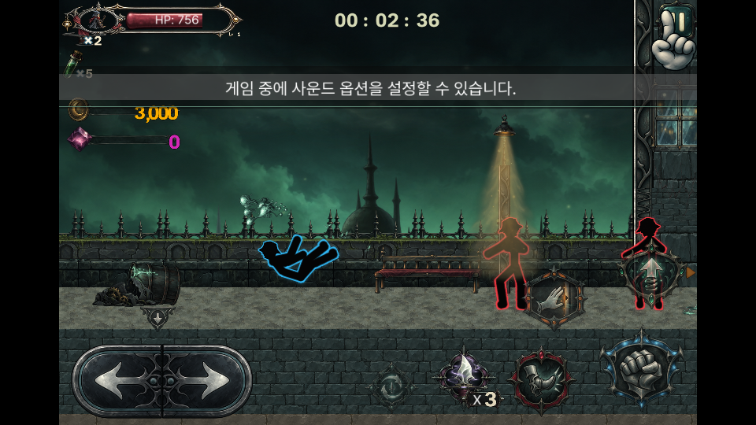

1.0.6 / R15 검토 빌드. 몸의 질감을 제거하고 원작 마스크·액션을 그대로 사용했습니다. 모자는 검은 윤곽으로 유지합니다. 아군·인질은 파랑, 적은 빨강이며 얇은 테두리와 부드러운 잔광이 은은하게 맥동합니다.
MuMu Android15 x86_64의 ARM64 번역 실행, 정상 속도. 실물 휴대전화 성능 검사는 별도입니다. 아래는 합성 시안이 아닌 실제 APK 캡처입니다.







몸체와 외곽광은 원본 알파로 생성하고 빛을 캐릭터 전체 뒤에 배치합니다. 부위마다 관절 고리가 앞에 드러나는 것을 줄이며, 원래 회전·좌우 반전·관절 위치·공격 판정을 유지합니다. NPC 구분은 색상이 아닌 원래 진영 슬롯과 AI 종류를 읽습니다.
적·플레이어 전투 화면과 도움말은 실제 캡처로 확인했습니다. 인질/아군 분류는 원래 생성·AI 코드와 단위 검사로 확인했으며, 이번 캡처에서 인질 구조 장면까지 재현한 것은 아닙니다. 전체 스테이지·특수 변신/탈것 조합은 추가 검수 대상입니다.